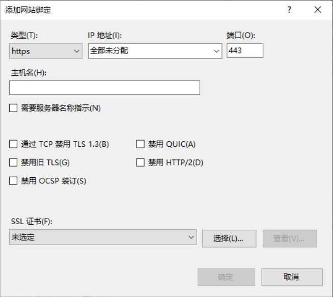

作者：gc(at)sysin.org，主页：www.sysin.org
转载请保留出处。
1. 引言
1.1 什么是 QUIC
QUIC（Quick UDP Internet Connections）是 chromium 的一个项目，这是一个体验的协议，旨在降低基于 TCP 通讯的 Web 延迟。QUIC 非常类似 TCP+TLS+SPDY ，但是基于 UDP 实现的。因为 TCP 是由操作系统内核或者是 middlebox 固件实现，因此对 TCP 进行大幅改造不太可能。所以 Google 开发了 QUIC 基于 UDP 来避免 TCP 的一些限制。
主页：https://www.chromium.org/quic
QUIC 与已有的 TCP+TLS+SPDY 比较关键的特性：
- 降低了连接建立时间
- 改进了握手控制
- 多路复用
- 可对错误连接进行转发
- 连接移植
1.2 了解 HTTP/3
运行在 QUIC 之上的 HTTP 协议被称为 HTTP/3 (HTTP-over-QUIC)。QUIC 协议 (Quick UDP Internet Connection) 基于 UDP，正是看中了 UDP 的速度与效率。同时 QUIC 也整合了 TCP、TLS 和 HTTP/2 的优点，并加以优化。
特点:
- 减少了握手的延迟(1-RTT 或 0-RTT)
- 多路复用，并且没有 TCP 的阻塞问题
- 连接迁移，(主要是在客户端)当由 Wifi 转移到 4G 时，连接不会被断开
- 集成了 TLS 1.3 加密
HTTP/3 与 HTTP/1.1 和 HTTP/2 没有直接的关系，也不是 HTTP/2 的扩展
HTTP/3 将会是一个全新的 WEB 协议
HTTP/3 目前处于制订和测试阶段
2. 服务端
2.1 F5 BIG-IP HTTP/3
参看：K60235402
从 BIG-IP 15.1.0.1 开始，F5 引入了 HTTP/3 和 QUIC 作为实验特性。BIG-IP 系统的中 HTTP/3 和 QUIC profiles 分别基于 draft-ietf-quic-http-24 和 draft-ietf-quic-transport-24 实验性实现。
使用 TMUI 创建 HTTP/3 virtual server
具体步骤如下：
Log in to the Configuration utility.
Go to Local Traffic > Virtual Servers.
Select Create.
Provide appropriate values for Name, Destination Address/Mask.
For Service Port, enter an appropriate port number. For example, 4433.
For Protocol , select UDP . Note: HTTP/3 and QUIC use the UDP protocol. By selecting UDP, options for HTTP/3 and QUIC profiles will be available for selection in the Acceleration section of the page.
For Protocol Profile (Server) , select tcp . Note: As HTTP/3 server side is currently not supported, you cannot use any of the UDP protocols on the server side.
For HTTP Profile (Client), select http.
For SSL Profile (Client), select clientssl-quic.
For SSL Profile (Server), select an appropriate Server SSL profile to communicate with your pool member.
Optional: For Source Address Translation, select Auto Map.
Select the HTTP MRF Router check box.
For QUIC Profile (experimental) , select quic.
Note: To create your own QUIC profile, go to Local Traffic > Profiles > Services > QUIC (experimental) and select Create.For HTTP/3 Profile (experimental) , select http3.
Note: To create your own HTTP/3 profile, go to Local Traffic > Profiles > Services > HTTP/3 (experimental) and select Create.Under Default Pool, select your pool.
Select Finished.
使用 tmsh 创建 HTTP/3 virtual server
具体步骤如下：
Log in to the TMOS Shell ( tmsh ) by entering the following command: tmsh
To create an HTTP/3 virtual server, use the following command syntax:
1
create ltm virtual <vs_name> ip-protocol udp destination <ipaddress>:<port_number> pool <pool_name> source-address-translation {type <type>} profiles add { udp { context clientside } tcp { context serverside } <clientssl_profile> { context clientside } <serverssl_profile> {context serverside } <quic_profile> { context clientside } <http3_profile> { context clientside } <http_profile> httprouter }
For example, enter the following command to create an HTTP/3 virtual server that contains the attributes in the table that follows:
1
create ltm virtual quic_vs ip-protocol udp destination 10.10.10.10:4433 pool example_pool source-address-translation {type automap} profiles add { udp { context clientside } tcp { context serverside } clientssl-quic { context clientside } serverssl {context serverside } quic { context clientside } http3 { context clientside } http httprouter }
Option Value Virtual Server name quic_vs Destination Address/Mask 10.10.10.10 Service Port 4433 Protocol UDP Protocol Profile (Client) udp Protocol Profile (Server) tcp HTTP Profile http SSL Profile (Client) clientssl-quic SSL Profile (Server) serverssl Source Address Translation Auto Map HTTP MRF Router Enabled QUIC Profile (experimental) quic HTTP/3 Profile (experimental) http3 Pool example_pool
2.2 Nginx HTTP/3
参考：Introducing a Technology Preview of NGINX Support for QUIC and HTTP/3
2020年6月10日，NGINX 宣布了 NGINX 的官方 QUIC 和 HTTP/3 实现的初始版本，即 http_v3_module。这是一个技术预览，应该被视为实验性的 - 它不适用于生产环境。在编写本文时，QUIC 标准尚未定稿，并且此初始版本是针对当前草案的一个子集实现的。
经过几个月的设计和开发，http_v3_module 已经准备好进行互操作性测试。我们也欢迎一般的反馈和代码贡献。请注意，http_v3_module 在 NGINX 开源主线开发分支中不可用（也不是 NGINX Plus 的任何版本）；因为它仍处于试验阶段，所以它是一个独立的开发分支，位于 https://hg.nginx.org/nginx-quic。
还请注意，这个 QUIC + HTTP/3 的实现是全新的，与 Cloudflare 作为其 quiche 项目的一部分提供的修补程序无关。
对于那些熟悉 NGINX 配置的人来说，启用 QUIC + HTTP/3 非常简单。
1 | server { |
2.3 Microsoft HTTP/3
Microsoft 在最新的 Windows Insider Preview Builds 中支持 QUIC 和 HTTP/3，并将其开源，名为 MsQuic。
MsQuic is Open Source
Microsoft 正在开发开源的 QUIC library，叫做 MsQuic, 在 GitHub 基于 MIT license. MsQuic 是一个跨平台的通用库，它实现了 QUIC 传输协议。QUIC 正在由互联网工程工作组（IETF）制定标准。MsQuic 是一个针对多种使用模式优化的客户机和服务器解决方案，并被多个 Microsoft 产品和服务使用。MsQuic 目前处于预览阶段，支持 Windows 和 Linux。
Windows 10
在 Windows 10 上，MsQuic 依赖于 Schannel 对于 TLS 1.3 功能的内置支持。MsQuic 以 msquic.sys驱动程序的方式封装在 Windows 内核之中，以支持内置的 HTTP 和 SMB 功能。用户模式应用程序使用msquic.dll（从这里构建）并将其与他们的应用程序打包。
Important This configuration requires running the latest Windows Insider Preview Builds for Schannel’s TLS 1.3 support.
Important This configuration does not support 0-RTT due to Schannel’s current lack of support.
配置选项
以下是在 Windows Insider Build 20175 中的 IIS 绑定一个 HTTPS 站点的截图，可以看到如同 HTTP/2 的设置，TLS 1.3 和 QUIC 默认将启用，除非手动勾选禁用。

2.4 Apache httpd
暂时没有 Apache httpd 支持 HTTP/3 的消息。Apache 目前还没有承诺何时进行相关的支持工作。
LiteSpeed is an Apache alternative supporting many of the same features, but with strong QUIC and HTTP/3 support.
3. 客户端
参考：
https://developers.cloudflare.com/http3/intro
3.1 Firefox
Firefox 75 及以上版本支持 HTTP/3
启用方法：在地址栏输入 ‘about:config’，配置 network.http.http3.enabled = true
通过 “Web 开发者” 可以看到 “版本:HTTP/3” “协议版本:: TLSv1.3”
3.2 Chrome、Edge
Chrome 83 及以上版本支持 HTTP/3，使用命令行增加如下启动参数：
1 | $ ./chrome --enable-quic --quic-version=h3-27 |
Running on Windows
1 | cd C:\Users\$USER\AppData\Local\Google\Chrome\Application |
(replace $USER with the name of your account on Windows)
Running on macOS
1 | /Applications/Google\ Chrome.app/Contents/MacOS/Google\ Chrome --enable-quic --quic-version=h3-27 |
Microsoft Edge (based on Chromium) 与 Chrome 同步支持，例如在 macOS 中运行 Edge：
1 | /Applications/Microsoft\ Edge.app//Contents/MacOS/Microsoft\ Edge --enable-quic --quic-version=h3-27 |
3.3 Curl
文档显示 Curl 7.66 及以上支持 HTTP/3，使用 –http3 参数，但实际上需要额外配置才能支持！
Ubuntu 20.04 自带 7.68 但不可直接使用
CentOS 8 自带 7.61，更新也不可直接使用：
1 | rpm -Uvh http://www.city-fan.org/ftp/contrib/yum-repo/rhel8/x86_64/city-fan.org-release-2-1.rhel8.noarch.rpm |
- macOS 10.15.5 自带 7.64，更新后也不可直接使用：
1 | brew install curl |
报错如下：
1 | curl --http3 -s -o /dev/null -v https://sysin.org |
解决办法：创建支持 HTTP/3 的 curl：参看 HTTP3 (and QUIC)
Linux: ngtcp2 version curl Build with OpenSSL
Build (patched) OpenSSL
git clone --depth 1 -b OpenSSL_1_1_1d-quic-draft-27 https://github.com/tatsuhiro-t/openssl
cd openssl
./config enable-tls1_3 --prefix=/usr/local/openssl
make
make install_swBuild nghttp3
cd ..
git clone https://github.com/ngtcp2/nghttp3
cd nghttp3
autoreconf -i
./configure --prefix=/usr/local/nghttp3 --enable-lib-only
make
make installBuild ngtcp2
cd ..
git clone https://github.com/ngtcp2/ngtcp2
cd ngtcp2
autoreconf -i
./configure PKG_CONFIG_PATH=/usr/local/openssl/lib/pkgconfig:/usr/local/nghttp3/lib/pkgconfig LDFLAGS="-Wl,-rpath,<somewhere1>/lib" --prefix=/usr/local/ngtcp2
make
make installBuild curl
cd ..
git clone https://github.com/curl/curl
cd curl
./buildconf
LDFLAGS="-Wl,-rpath,/usr/local/openssl/lib" ./configure --with-ssl=/usr/local/openssl --with-nghttp3=/usr/local/nghttp3 --with-ngtcp2=/usr/local/ngtcp2 --enable-alt-svc
makemacOS：Curl + Quiche
Homebrew formula for curl + quiche to easily build and test HTTP/3 on MacOS.
Requirement
Install homebrew from https://brew.sh/
Build
This will replace your current curl installation. Run the following commands to install required dependencies and to build curl with quiche support.
- Uninstall curl if you already have:
1 | brew remove -f curl |
- Build curl with quiche:
1 | brew install -s https://raw.githubusercontent.com/cloudflare/homebrew-cloudflare/master/curl.rb |
2020.11.13 更新：
由于 brew 版本更新，报错如下：
Error: Calling Non-checksummed download of curl formula file from an arbitrary URL is disabled! Use ‘brew extract’ or ‘brew create’ and ‘brew tap-new’ to create a formula file in a tap on GitHub instead.
解决方法：
1 | wget https://raw.githubusercontent.com/cloudflare/homebrew-cloudflare/master/curl.rb |
At the end curl binary will be installed on “/usr/local/opt/curl/bin”, so you need to add to your $PATH
1 | ln /usr/local/opt/curl/bin/curl /usr/local/bin/curl |
Check if curl with H3 support is built properly:
1 | curl --help | egrep 'alt-svc|http3' |
Now, you can try curl on any H3 enabled sites.
1 | curl --http3 -I https://sysin.org |
3.4 在线检测网站
促销信息：
>>全球网盘极速中转，1G流量不到1元，支持 Rapidgator、Rg.to、Uploaded...
>>阿里云：新用户2核2g仅需86元/年，2核4g企业仅需469.39元/年
>>腾讯云：云产品限时秒杀，爆款1核2G云服务器，首年99元
>>华为云：精选云产品2折起，注册立领8800元上云礼包
如果文章中使用的内容和图片侵犯了您的版权，请联系作者删除。如果您喜欢这篇文章或者觉得它对您有用，欢迎您发表评论，也欢迎您分享这个网站，或者赞赏一下作者，谢谢！
 支付宝打赏
支付宝打赏
 微信打赏
微信打赏
赞赏一下